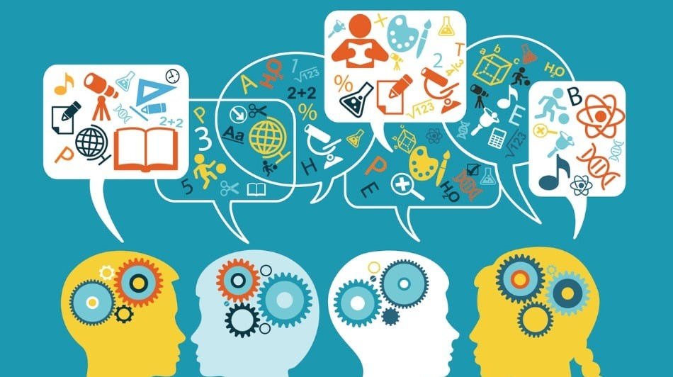

Artículo destacado de la semana
La transformación digital en la educación superior ha permitido que miles de estudiantes accedan a programas académicos flexibles y de alta calidad. Las universidades incorporan herramientas tecnológicas que fortalecen el aprendizaje colaborativo, la investigación y el desarrollo profesional.
Leer másInnovación en metodologías educativas

Las metodologías activas como el aprendizaje basado en proyectos fomentan el pensamiento crítico, la autonomía y la resolución de problemas reales. Fortalecen el perfil profesional del estudiante y mejoran su preparación para el mercado laboral.
Leer másImportancia de la formación bilingüe
Dominar un segundo idioma amplía las oportunidades académicas y profesionales. La formación bilingüe facilita el acceso a investigación internacional y mejora la competitividad en un entorno globalizado cada vez más exigente.
Leer más